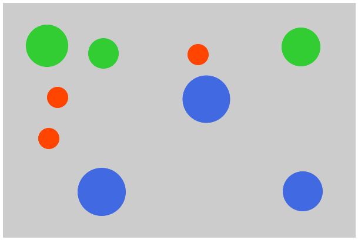

Stanford Psychology Department
In this experiment, we will be testing your short-term memory.
On each trial, you will see circles of different sizes and colors displayed at random locations on the screen. Remember the sizes of the blue and red circles, but ignore the green circles. As example, you might see a display that looks like this:
The circles will be shown for 1.5 seconds, followed by a 1 second delay with nothing on the screen. After the delay, a single black circle will appear at the location of one of the original red or blue circles.
When the black circle appears, change its size by moving your mouse up and down until it matches the original circle at that location as best you remember. When you believe you have matched the original size, click the mouse to lock in your answer and start the next trial. There will be 30 trials in total.
Because the stimuli are going to be delivered quickly and we will be testing your memory, it is important that you minimize distractions as much as possible. Please close or minimize any other tabs that may draw your attention.
When ready, click "Start" to begin. The first trial will happen one second after clicking. Please try to complete the experiment without any interruptions.
Legal information: By answering the following questions, you are participating in a study being performed by cognitive scientists in the Stanford Department of Psychology. If you have questions about this research, please contact us at stanfordpsych254@gmail.com. You must be at least 18 years old to participate. Your participation in this research is voluntary. You may decline to answer any or all of the following questions. You may decline further participation, at any time, without adverse consequences. Your anonymity is assured; the researchers who have requested your participation will not receive any personal information about you.